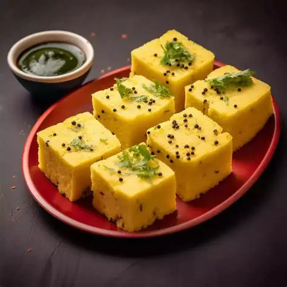
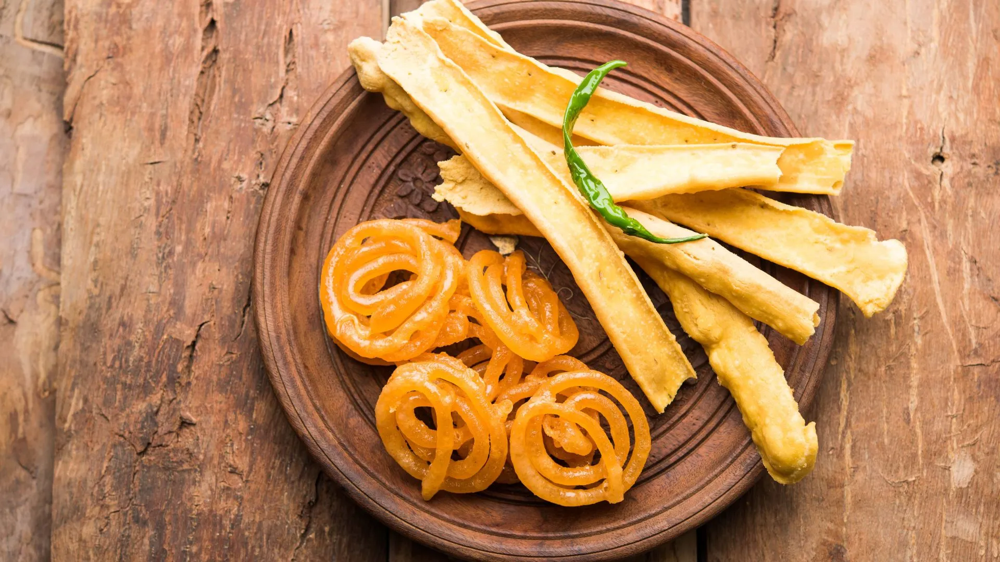
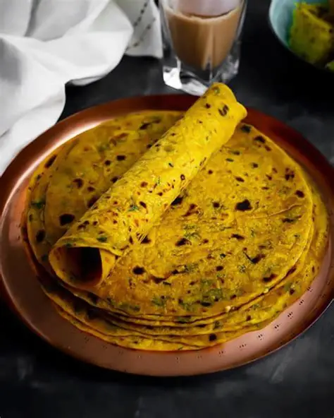
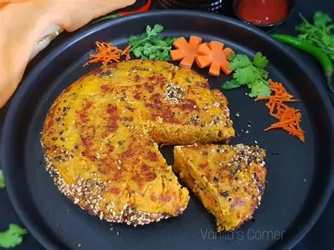
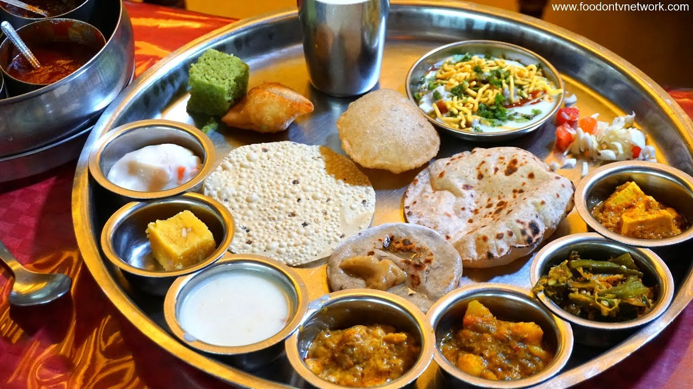
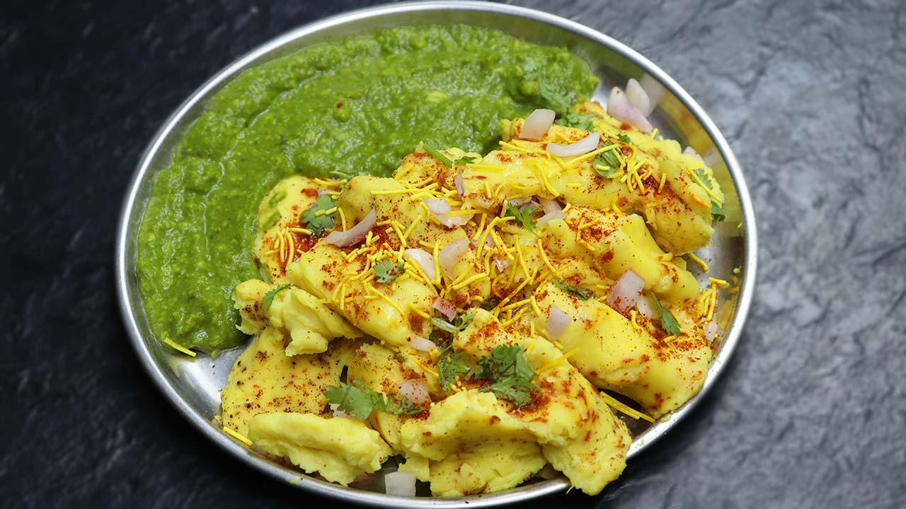

A soft, fluffy, and savory steamed cake made from gram flour (besan). It is a signature Gujarati snack tempered with mustard seeds and fresh curry leaves.

The ultimate Gujarati breakfast duo. Crunchy gram-flour strips (fafda) paired with sweet, juicy jalebis and spicy fried chilies—a perfect balance of flavors.

A healthy and flavorful flatbread made with whole wheat flour, gram flour, and fresh fenugreek leaves. It is a travel-friendly staple loved by all Gujaratis.

A savory vegetable cake made from a fermented batter of lentils and rice, baked to a crispy golden crust and filled with grated bottle gourd.

A massive, colorful platter featuring a balance of sweet, salty, and spicy dishes like Kadhi, Shaak, Rotli, and various savory snacks (farsan).

A popular steamed, crumbly snack made from gram flour, topped with plenty of butter, sev, and special Locho masala. It's a melt-in-the-mouth treat.